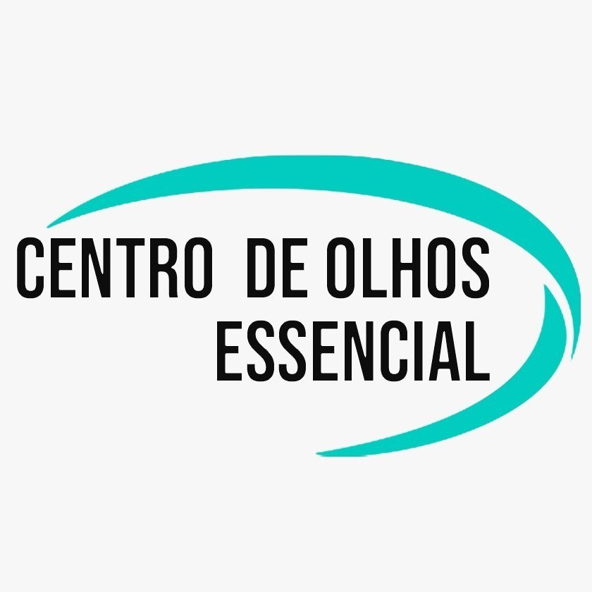

01
Optometria Comportamental
Abordagem voltada à avaliação de aspectos funcionais e comportamentais da visão.
Consultar atendimentoOptometria comportamental e cuidados visuais com atenção às diferentes necessidades de crianças, adolescentes e adultos.

CUIDADO VISUAL • ATENÇÃO INDIVIDUALO Centro de Olhos Essencial é uma clínica de Optometria Comportamental localizada em Salvador. Reúne atendimentos voltados à avaliação visual e a diferentes necessidades relacionadas à visão.
Conheça as áreas de atendimento e converse com a equipe para obter orientações sobre disponibilidade e agendamento.
Entre em contatoExplore os serviços e solicite informações sobre o atendimento mais adequado à sua necessidade.
Abordagem voltada à avaliação de aspectos funcionais e comportamentais da visão.
Consultar atendimentoInformações sobre avaliação e terapia ou reabilitação visual, conforme indicação e escopo do atendimento.
Consultar atendimento ↗Entre em contato para conhecer a avaliação visual disponibilizada pela clínica.
Consultar atendimento ↗Atendimento relacionado a necessidades visuais específicas e recursos de apoio à visão.
Consultar atendimento ↗Informações sobre a abordagem da clínica para necessidades relacionadas à ambliopia.
Consultar atendimento ↗Consulte a equipe sobre o serviço e as etapas de atendimento disponíveis.
Consultar atendimento ↗Solicite informações sobre avaliação e orientações relacionadas a lentes de contato.
Consultar atendimento ↗Converse com a clínica sobre os atendimentos relacionados ao ceratocone.
Consultar atendimento ↗As informações desta página são institucionais e não substituem avaliação individual ou orientação médica. A disponibilidade e o escopo de cada serviço devem ser confirmados com a clínica.
Em breve, esta seção poderá apresentar imagens reais da clínica, dos ambientes e da equipe.
As fotografias serão adicionadas após o envio e aprovação pela empresa.
Preencha os dados e abra o WhatsApp com sua mensagem pronta. O agendamento será combinado diretamente com a equipe.
Use o formulário acima ou o botão de WhatsApp. A equipe poderá informar sobre horários e disponibilidade.
O Centro de Olhos Essencial informa atendimento para diferentes faixas etárias. Consulte a equipe sobre o serviço desejado e a faixa etária específica.
Entre em contato e informe o motivo da sua procura. A equipe poderá explicar os serviços disponíveis e orientar sobre o encaminhamento adequado.
Rua Simões Filho, 40, Boca do Rio, Salvador – BA, CEP 41705-010.